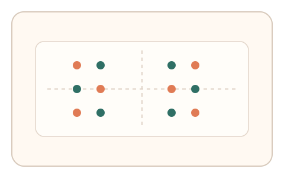
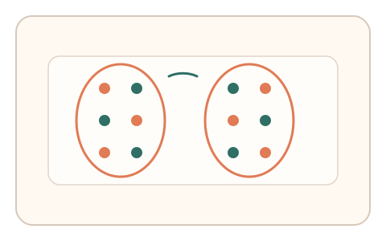
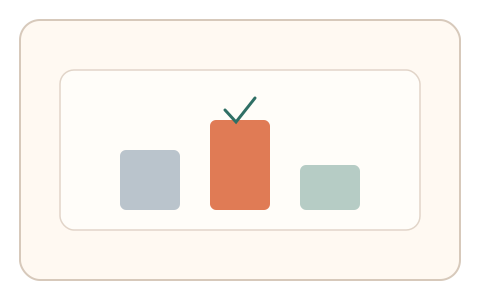

#60
视觉思考范式：Gestalt/对称/频率
已扩展
亲近‑相似冲突分组
在亲近与相似线索冲突时观察分组偏置，用拖拽路径与犹豫停顿验证真实性。
概念原文
画面中点阵同时存在“距离近”和“颜色同”两种分组线索，要求用户按直觉拖拽成组并画出分界。记录分组选择、拖拽路径与犹豫停顿。
利用人类在冲突线索下的分组偏置作为验证信号，而不是分组对错。
研究背景
Gestalt 分组中亲近性与相似性常产生冲突，人类会在冲突条件下表现出稳定的偏置与犹豫节奏。通过记录分组选择与拖拽轨迹，可获得比正确性更稳定的行为信号。
核心机制
- 呈现点阵同时提供距离近与颜色同两类线索。
- 用户按直觉拖拽分组并画出分界。
- 记录分组选择、拖拽路径与停顿。
- 分析偏置方向与犹豫节奏。
用户流程
- 步骤 1：用户看到冲突线索点阵。
- 步骤 2：用户拖拽分组并画出分界。
- 步骤 3：系统分析偏置与路径并判定。
判定信号
分组选择偏置
人类在冲突线索下存在可预测偏向。
拖拽路径与犹豫停顿
真实分组会出现试探与短暂停顿。
判定逻辑
结合分组偏置方向、路径连贯性与停顿节奏判定；极端规则或完全随机判异常。
对抗面
- 脚本固定按颜色或距离规则分组
- 重放真实用户的拖拽轨迹
防御与缓解
- 随机化点阵布局与颜色分布
- 加入轻微位置噪声与密度变化
- 叠加微时序与轨迹抖动进行多信号判定
可达性与风险
提供点击选择分组或降低密度模式，避免对精细拖拽用户造成负担。
- 文化或经验差异影响分组偏好
- 小屏设备降低分组清晰度
可视化状态

状态 1：冲突线索
距离与颜色同时提示分组。

状态 2：拖拽分组
用户拖拽并画出分界。

状态 3：偏置判定
分析分组偏置与犹豫节奏。
参考资料
Gestalt psychology
说明亲近性与相似性分组原则。
Principles of grouping
说明冲突线索下的分组偏置。